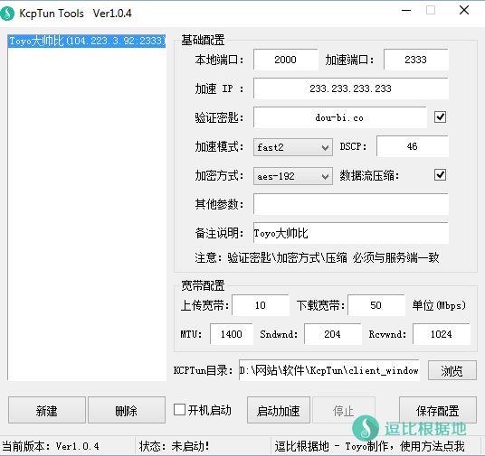
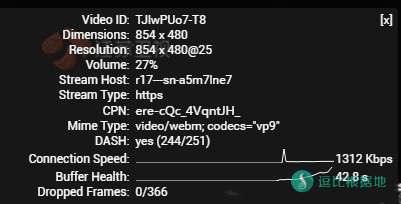
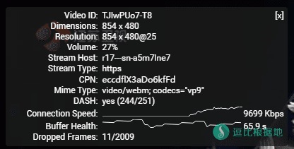

本来是不想写 KCPTun 的教程的，几个月前就发现这个软件了，也有人想让我写，但是我很讨厌Finalspeed和Netspeed，所以连带着KCPTun后也不喜欢。
但是最近发现很多软件都开始支持这玩意了，比如Shadowsocks安卓版、V2ray、一些路由器固件，再加上最近让我写这个软件的人也挺多，那我就干脆写了吧，反正最近没东西写挺无聊的。
注意：本软件已经放弃更新，所以请勿继续使用。
KCPTun在Windows的客户端和服务器一样，都是只有两个文件，一个是客户端，一个是服务端。
同样也是没有任何的启动工具、脚本，需要手动写脚本或者用CMD运行，挺麻烦的，而且对于多服务器来说，就要创建多个脚本。
看了看实现这些功能也不难，于是我就写了个KcpTun Tools辅助工具，来辅助KcpTun运行，会方便挺多的。
- 如果你要搭建服务端，请看这个教程：Shadowsocks另一种双边加速软件 —— KCPTun（服务端教程），其他KCPTun教程 请看：这里
目前最新版本：V1.0.4
主要特性
- 支持多服务器
- 可视化操作
- 可后台运行
- 随机启动
- 新手识别度高
截图展示

使用方法
KcpTun客户端设置
简单步骤：
- 打开软件，并点击 新建 按钮
- 依次填写 KcpTun 信息
- 选择 KcpTun文件目录 和填写 上传下载宽带
- 点击 保存配置 按钮
- 点击 启动加速 按钮
- 完成，如果没有填错，那就可以使用了。
详细步骤：
注意：加速端口 / 加密方式 / 验证密匙 / 压缩 必须和服务器配置一致！
- 首先你要先安装好 KcpTun 的服务端或者有 KcpTun 的加速信息，然后打开本软件。
- 点击最下角的 新建 按钮，然后在右边依次输入 KcpTun参数。
注意：在基础配置中，本地端口是可以任意的（但是不要使用1080，这样会和Shadowsocks客户端的本地端口冲突），DSCP不懂得不要设置，验证密匙需要和服务端配置一样（可以不设置留空），因为参数过多，软件只是把常用的参数列出来 其他配置大家可以手动添加。剩余的参数必须和服务器一模一样
（注意：验证密匙是 KcpTun服务端的验证密匙，和Shadowsocks账号的密码毫无关系，不要弄混了）
- 宽带配置，就去测试一下你的宽带实际上行和下行是多少，然后填上去，下面就会根据作者推荐的比例自动计算 Sndwnd/Rcvwnd 参数的值了。MTU不懂不要改。
注意！这里的宽带数值只能填少，不能填多，如果宽带数值高于本地实际宽带过多，将会导致服务器浪费大量宽带和流量，甚至你的 服务器实际使用流量 会比 你使用的流量 多十几倍，等于说完全浪费了十几倍的流量，也没有给你用到，服务器还消耗了这些流量。
- 然后点击 浏览 按钮选择你的 TcpKun 客户端文件，例如： 32x 的是 client_windows_386.exe ，64x的是 client_windows_amd64.exe 。
TcpKun下载地址：https://github.com/xtaci/kcptun/releases （32位下载kcptun-windows-386-*.tar.gz，64位下载kcptun-windows-amd64-*.tar.gz）
当然，你也可以直接 把 TcpKun 客户端文件拖拉到软件窗口，将会自动获取目录。
最后，确定各个选项参数都正确，就可以点击 启动加速 按钮启动软件了！这时候你可以点 右上角的x 关闭软件了，软件会自动托盘后台运行的，在右下角你会看到软件图标的！
Shadowsocks客户端设置
打开Shadowsocks客户端，添加服务器，服务器IP为127.0.0.1，服务器端口为 KcpTun Tools 上面的的本地端口，这里是2000，然后你的ss密码、加密方式等等都按照原来的账号设置，也就是说只改了IP和服务器端口选项，其他的都和原Shadowsocks账户保持一致。
更新日志
版本1.0.4 日期2016年11月22日
- 添加加密方式和是否压缩选项。
- 修复检测更新功能。
Tip：因为更换域名，所以检测更新失效了。
版本1.0.3 日期2016年08月18日
- 修复 无法开机启动的BUG。
- 添加 关闭后保留当前节点和启动状态记录。
解释：如果上次是启动加速中退出程序，下次启动自动选择上次最后使用的节点并启动加速。
版本1.0.2 日期2016年08月18日
- 修复 KcpTun目录包含空格无法启动的BUG。
- 优化 了一些参数。
版本1.0.1 日期2016年08月17日
- 增加 检测更新功能。
- 增加 软件启动后检查KcpTun文件是否存在。
- 优化 KcpTun进程检测。
- 修复 无法使用 加速方式[default] 的BUG。
- 修复 宽带计算公式，sndwnd值错误。
版本1.0.0 日期2016年08月07日
- 推出正式版 Ver 1.0！
下载地址
因为就花了一会时间做好了，所以本人简单的测试可能会有一些BUG没有发现，如果大家发现了请在下面留言！
加速效果
美国服务器，加速前 Youtube 速度：

加速后 Youtube 速度：

故障排除
- 客户端和服务器端皆无
stream opened信息。连接客户端程序的端口设置错误。
- 客户端有
stream opened信息，服务器端没有。连接服务器的端口设置错误，或者被防火墙拦截。
- 客户端服务器皆有
stream opened信息，但无法通信。上层软件的设定错误。
注意：日志信息在你的客户端或者服务端同目录下的 kcptun.log 中。
注意事项
- 软件仅支持Windows系统，对于Linux和Mac用户说声抱歉。
- win7以上系统如无法运行请尝试使用 管理员模式 启动。
- 软件由易语言编写，所以一些杀毒软件可能报毒，我再次保证，我原创的软件绝对没有病毒！
KcpTun有个缺点，就是实际流量消耗 最少是 你使用量的两倍！如果参数调整有问题，可能会浪费十几倍的流量，而加速幅度也并不会上升多少。
作者的解释：
- 出现这个情况有几种可能：
- ISP 对UDP丢包极高，例如50%
- 服务器，客户端本身的带宽较低，可以适当调低sndwnd /rcvwnd
- 可以尝试 -dscp 46参数降低丢包率。
希望你们注意一下这个问题，可能搞不好就被 IDC 以滥用网络的名义给封VPS了。
- 如果你要搭建服务端，请看这个教程：Shadowsocks另一种双边加速软件 —— KCPTun（服务端教程），其他KCPTun教程 请看：这里
转载请超链接注明：逗比根据地 » 『原创』KCPTun 客户端教程 + 自写KcpTun Tools辅助工具
责任声明：本站一切资源仅用作交流学习，请勿用作商业或违法行为！如造成任何后果，本站概不负责！


说实话 KCP相关的教程我也不想写了，我写的客户端和这几个教程，早几个月前就不再更新了。
我就是一个矛盾的人，当初本来不想写的，后来实在没什么东西写了，就还是写了，写了之后又有一点后悔，就不再更新了，但是也不想删除。
-key test